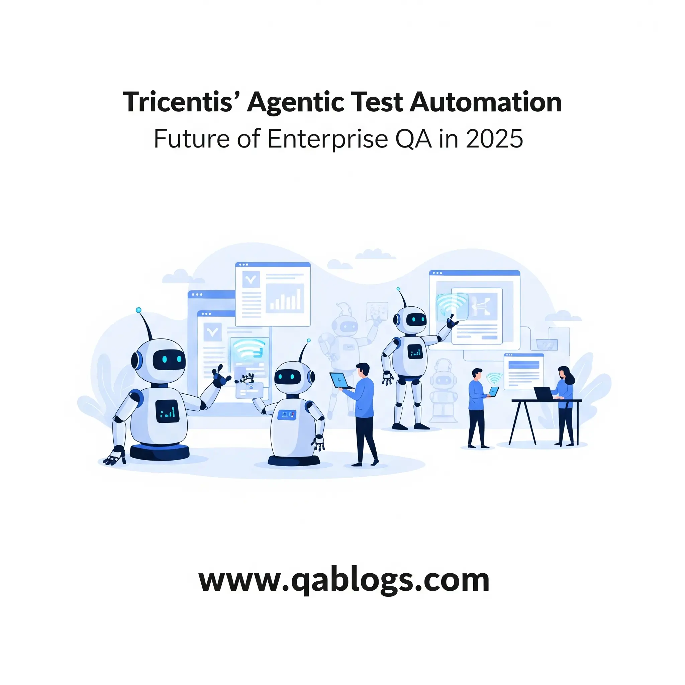

Tricentis’ Agentic Test Automation: The Future of Enterprise QA in 2025

In 2025, the landscape of enterprise quality assurance (QA) is being reshaped by the explosive rise of agentic AI, a transformative technology that empowers autonomous decision-making and intelligent workflows. At the forefront of this revolution is Tricentis, a global leader in continuous testing, with its groundbreaking Agentic Test Automation platform. Unveiled on June 24, 2025, this innovation promises to redefine enterprise QA by streamlining test creation, enhancing productivity, and ensuring unparalleled software quality. As 80% of software teams plan to leverage AI in 2025, Tricentis’ agentic strategy is a game-changer for QA engineers, testers, developers, and tech professionals navigating complex digital ecosystems. This blog post explores how Tricentis’ Agentic Test Automation is shaping the future of enterprise QA, offering actionable insights to elevate your testing strategy.
What Is Agentic Test Automation?
Defining Agentic AI in QA
Agentic AI refers to autonomous systems capable of understanding intent, making decisions, and executing tasks with minimal human intervention. Unlike traditional automation, which follows rigid scripts, agentic AI adapts dynamically to changes, learns from context, and optimizes workflows. In QA, this translates to intelligent test creation, self-healing scripts, and predictive analytics that reduce manual effort and enhance test coverage.
Tricentis’ Agentic Test Automation, integrated with tools like Tosca and qTest, leverages proprietary Vision AI and remote Model Context Protocol (MCP) servers to deliver end-to-end testing for enterprise applications, including SAP Fiori, web, and mobile apps. It’s the first AI agent capable of generating complete test cases from natural language prompts, analyzing historical test data, and adapting to enterprise-specific environments.
Analogy: Tricentis’ Agentic Test Automation is like a seasoned QA colleague who not only executes tests but also anticipates issues, adapts to changes, and provides actionable insights—all at superhuman speed.
Key Features of Tricentis’ Agentic Test Automation
- Natural Language Test Creation: Generates test cases from user stories or requirements in seconds, reducing test creation time by up to 85%.
- Vision AI Technology: Interprets visual UI elements across platforms, ensuring technology-agnostic testing for complex environments like SAP.
- Remote MCP Servers: Standardizes AI agent communication, enabling seamless integration with custom or third-party AI models like OpenAI or Claude.
- Self-Healing Scripts: Adapts to UI changes, minimizing test flakiness and maintenance overhead.
- AI Workflow Beta: Offers intuitive, chat-based interfaces for non-technical users, democratizing test automation across teams.
Stat: Early adopters of Tricentis’ Agentic Test Automation report 60% gains in overall productivity, highlighting its impact on enterprise QA.
Why Tricentis’ Agentic Test Automation Matters in 2025
Addressing Enterprise QA Challenges
Enterprise QA teams in 2025 face unprecedented demands: faster release cycles, complex integrations, and compliance with standards like the European Accessibility Act (EAA). Traditional tools like Selenium struggle with maintenance and scalability, while manual testing can’t keep pace with DevOps. Tricentis’ agentic AI addresses these challenges by:
- Reducing Test Creation Time: Automating test case generation frees QA engineers to focus on strategic tasks like exploratory testing.
- Scaling Across Technologies: Supports over 160+ technologies, from ERP systems to mobile apps, ensuring comprehensive coverage.
- Ensuring Compliance: Integrates with traceability tools like qTest to align tests with regulatory requirements, critical for industries like healthcare and banking.
Real-World Example: Wolters Kluwer, a participant in Tricentis’ co-development program, reported that remote MCP servers enabled their QA team to “explore ideas and iterate faster” by describing workflows to AI, transforming their quality engineering process.
Aligning with 2025 QA Trends
Tricentis’ agentic strategy aligns with key trends shaping enterprise QA:
- Agentic AI Adoption: Gartner predicts 33% of enterprise software will include agentic AI by 2028, with QA leading early adoption.
- Hyper-Automation: Tricentis’ integration with CI/CD pipelines supports end-to-end automation, cutting release cycles by 30–40%.
- Cloud-Native Testing: Tosca’s cloud deployment and Elastic Execution Grid enable scalable, parallel testing for SaaS apps.
- Ethical AI Governance: Tricentis’ hybrid model ensures compliance with the EU AI Act, offering secure, transparent AI workflows.
Comparing Tricentis’ Agentic Test Automation to Traditional Tools
| Feature | Tricentis Agentic Test Automation | Selenium | Cypress |
|---|---|---|---|
| AI Capabilities | Agentic AI, natural language test creation | No AI, manual scripting | Limited AI, auto-waits only |
| Test Creation | 85% faster with Vision AI and NLP | Time-intensive, code-heavy | Faster than Selenium, but code-heavy |
| Maintenance | Self-healing, low maintenance | High, prone to flakiness | Moderate, requires script updates |
| Cross-Platform Support | 160+ technologies, SAP, web, mobile | Limited, requires plugins | Web-focused, limited mobile/ERP support |
| CI/CD Integration | Seamless with Jenkins, GitLab, Jira | Manual configuration | Good, but less enterprise-ready |
| Accessibility Testing | Integrated with WCAG compliance tools | Requires third-party tools | Limited, needs external plugins |
Analysis: Tricentis outperforms Selenium and Cypress in enterprise QA due to its agentic AI, low-code options, and broad technology support. Selenium’s manual scripting and high maintenance make it less viable for 2025’s rapid releases, while Cypress, though developer-friendly, lacks Tricentis’ enterprise-grade scalability and SAP expertise. Tricentis’ Vision AI and MCP servers make it uniquely suited for complex, regulated environments.
Challenges in Adopting Tricentis’ Agentic Test Automation
- Skill Gap: QA teams may lack expertise in agentic AI or advanced
automation.
Solution: Enroll in Tricentis Academy’s AI-focused courses to upskill teams. - Integration Complexity: Legacy systems may require custom
configurations.
Solution: Use Tricentis’ on-premises MCP servers for seamless integration with existing tools. - Cost: As a premium platform, Tricentis may be cost-prohibitive for
small teams.
Solution: Start with a pilot project to demonstrate ROI, leveraging Tricentis’ free trials. - Ethical AI Concerns: Ensuring compliance with regulations like the
EU AI Act is critical.
Solution: Adopt Tricentis’ hybrid model with audit trails and human oversight.
Real-World Example: Flowers Foods used Tricentis’ SAP testing solutions to migrate to S/4HANA, reducing testing time significantly while maintaining data integrity, showcasing the platform’s enterprise readiness.
Practical Insights for QA Professionals
- Pilot Agentic Testing: Start with Tricentis’ AI workflow beta to automate regression testing, measuring time savings and coverage improvements.
- Upskill in AI-Driven QA: Complete Tricentis Academy’s Tosca Copilot training to master agentic AI tools, enhancing career competitiveness.
- Integrate with DevOps: Embed Tricentis Tosca in Jenkins or GitLab pipelines to enable continuous testing, ensuring quality at every commit.
- Focus on Accessibility: Use Tricentis’ integration with axe-core to meet EAA requirements, embedding WCAG checks in test suites.
- Join Tricentis Events: Attend Tricentis Transform (London, Oct 14–15, or Nashville, Oct 21–22, 2025) for hands-on demos and networking with QA leaders.
Conclusion: Embracing the Future of Enterprise QA
Tricentis’ Agentic Test Automation is redefining enterprise QA in 2025, offering a future-ready solution for complex, fast-paced digital environments. With its natural language test creation, Vision AI, and remote MCP servers, Tricentis empowers QA teams to achieve 85% faster test creation and 60% productivity gains, all while ensuring compliance and scalability. As agentic AI becomes a cornerstone of software testing, Tricentis is leading the charge, enabling QA engineers to focus on innovation rather than repetitive tasks.
Ready to revolutionize your QA strategy? Sign up for Tricentis’ AI workflow beta or explore their free trials today. Share your automation insights in the comments below or join QA Blogs on X for real-time updates. Let’s shape the future of enterprise QA together in 2025
Join Our Community of QA Professionals
Get exclusive access to in-depth articles, testing strategies, and industry insights. Stay ahead of the curve with our expert-curated content delivered straight to your inbox.
Nikunj Mistri
Founder, QA Blogs
About the Author